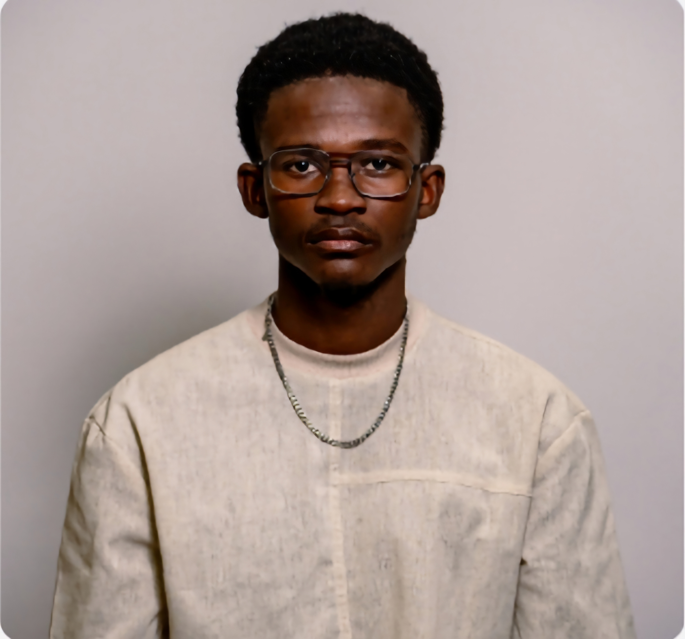
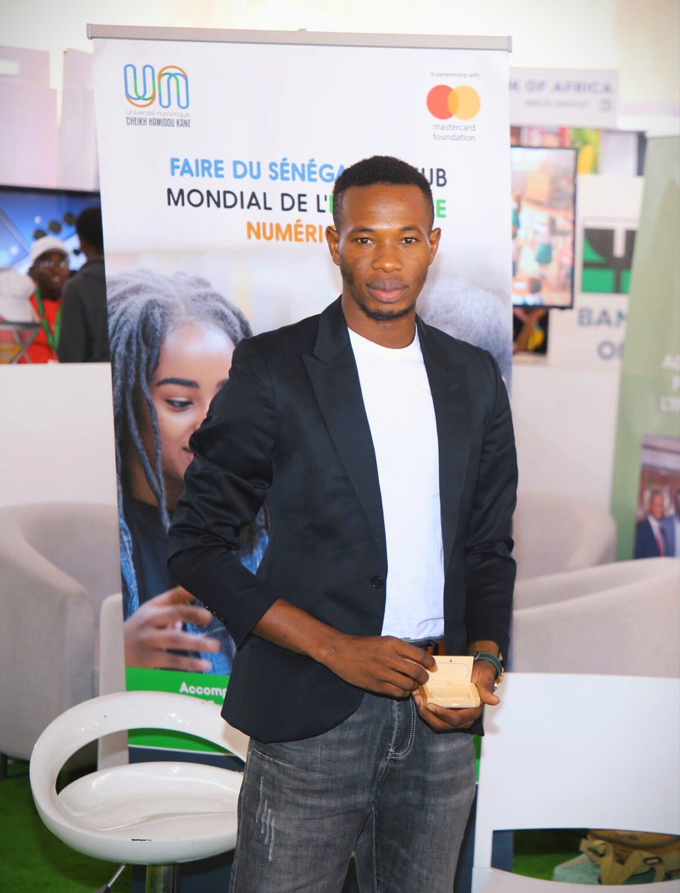
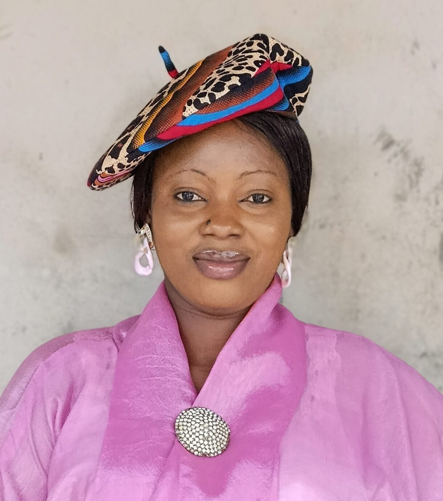
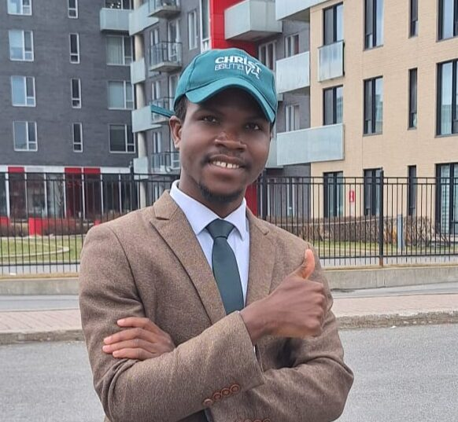

Meet the fellows
Sort by Default sorting ⌄

Namibia2026
Jason Sheepo
Change Drivers Organization
Jason Sheepo is a visionary leader and the founder of Change Drivers Organization, a social enterprise dedicated to driving community transformation and sustainable development. Through innovative initiatives, Jason focuses on empowering local youth and fostering entrepreneurial skills to create lasting impact.
VISIT PROFILE →

Senegal2026
Laba Faye
Pont Vert
Laba Faye built Pont Vert around a straightforward conviction: farmers deserve fair prices, reliable markets, and real support — not exposure to the whims of middlemen and weather cycles.
VISIT PROFILE →

Democratic Republic of Congo2026
Espérance Kavaketi
Es'Concept
Espérance Kavaketi grew up in Goma — a city shaped by both extraordinary resilience and extraordinary difficulty. She watched young women in her community face unemployment.
VISIT PROFILE →

Uganda2026
Byamugisha Nickson
TAMU Flavoured Honey
Byamugisha represents a generation of African founders who see entrepreneurship not just as a path to income, but as a tool for social change.
VISIT PROFILE →

Nigeria2026
Chinonso Osueke
Dekona Homes and Apartments
Chinonso Goodluck Osueke didn’t have to look far to find her business idea. She watched students, corps members, and young professionals struggle to find safe, affordable housing.
VISIT PROFILE →

Democratic Republic of Congo2026
Eddy Kayisire
V-ZONE CLOUD
Eddy Kayisire grew up in the DRC where digital infrastructure was limited. His passion for software development led him to co-create homegrown digital solutions.
VISIT PROFILE →

Cote d'Ivoire2026
Bio Euphrahim Yai
VertIvoire Groupe
Bio Euphrahim Yai grew up understanding that farming is about more than food — it is about community, environment, and long-term survival.
VISIT PROFILE →
Nigeria2026
Covenant Awoyemi
Eco-Recycle Livestock Haven
Covenant Awoyemi is a Nigerian entrepreneur and community health nurse who turned a simple principle — nothing goes to waste — into a business model.
VISIT PROFILE →

Zimbabwe2026
Anele Marvellous Khumalo
Crisp & Co. Creatives
Anele Marvellous Khumalo grew up in Emganwini, Bulawayo, where entrepreneurship wasn’t a career choice — it was a means of survival.
VISIT PROFILE →

Egypt2026
Ahmed Abdelnasser Ahmed
Agreology
Ahmed Abdelnasser Ahmed grew up fascinated by the gap between what agriculture could be and what it was — inefficient, data-poor, and disconnected from modern technology.
VISIT PROFILE →
Kenya2026
Branice Kazira
Signvrse
Growing up, Branice Kazira witnessed first-hand how communication barriers excluded Deaf and hard-of-hearing individuals from education, healthcare, and everyday life.
VISIT PROFILE →